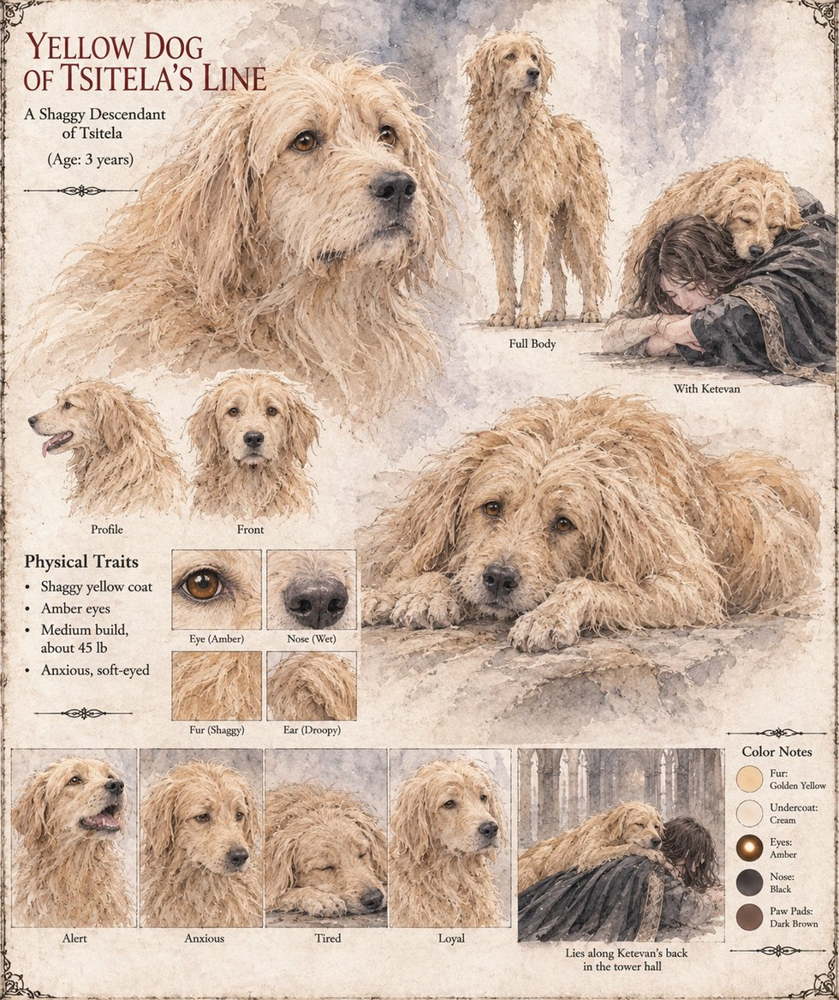

Yellow Dog of Tsitela’s Line
Dog of Ormeli tower hall · of Tsitela’s line · 3 years on its sheet
The manuscript gives it one sentence. On the evening Rati brings the news from Samaghvto, Ketevan sits on in the tower hall until the household has gone up, lights a single candle and not two, opens the ledger to the third column, writes Nestan, daughter of Ketevan, aged forty-one, and finds she cannot close the line. What follows happens on the floor under the great oak table where her daughter had once hidden from the pilgrims, and it is not a catharsis but a failure of machinery, and it runs down in its own time into a stillness that was not peace.
A dog of Tsitela’s line, a yellow, shaggy, anxious creature of no known ancestry, came and lay along her spine, as dogs do, and was warm, and she did not notice. In the morning she rises, washes her face and eats, and goes first to the gate, where she fills the clay bowl that her daughter had kept there for every dog in the valley, and then out onto the grey terraces to count what is left. The dog has no name, sex or age in the manuscript, and nothing else to do in it; it is, so far as the page says, the only creature in the tower that night who knows what to do.
The sheet’s age of 3 years, golden-yellow coat with a cream undercoat, amber eyes, wet black nose, drooping ears, medium build of about 45 lb and the panels Alert, Anxious, Tired and Loyal are its own. Its scenes, With Ketevan and Lies along Ketevan’s back in the tower hall, follow the manuscript, though the sheet draws the woman younger and darker-haired than the manuscript’s Warden, who is by then past sixty and grey.
“a yellow, shaggy, anxious creature of no known ancestry”